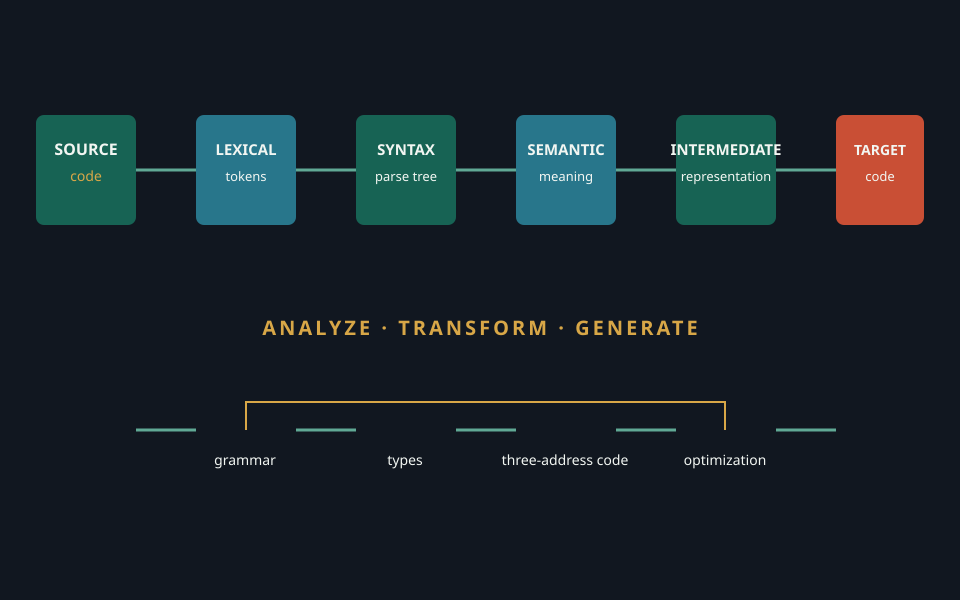

IIT professor's course resource library
Compiler
Design
Lecture notes and practical resources for the stages of compiler construction, from lexical analysis to code optimization.
Course taught by Prof. Anjan ChowdhuryDepartment of Computer Science and Engineering · IIT (ISM) Dhanbad
34lecture-note PDFs
11lab weeks
11tutorial sheets
7past-paper resources

Course material
Resource library
Search and filter the full course collection. Open a PDF in the built-in preview or in a new tab.
No resources match that search. Try another topic or choose “All resources”.
Course introduction
Start with the compiler overview and course context
Lexical analysis
Tokens, regular expressions, and scanner construction
Syntax analysis
Grammars, parsing strategies, and Yacc
- Bottom up parsing V1.0 Open resource
- Bottom up parsing v2.0 Open resource
- Bottom up parsing v3.0 Open resource
- Syntax Analysis v1.0 Open resource
- Syntax Analysis v2.0 Open resource
- Syntax analysis v3.0 Open resource
- Syntax analysis v4.0 Open resource
- Syntax analysis v5.0 Open resource
- yacc Open resource
Semantic analysis
Type checking, syntax-directed translation, and intermediate code
Intermediate code
Intermediate representations and code generation
Code optimization
Techniques for improving generated code
Consolidated study notes
Combined topic PDFs for revision
Lab week 01
File processing and character, word, and line counting
Lab week 02
Lexical rules and a calculator with Flex
Lab week 03
Pattern analysis and multi-file word counting
Lab week 04
Removing immediate and indirect left recursion
Lab week 05
FIRST and FOLLOW sets and LL(1) parsing
Lab week 06
Error recovery and operator-precedence parsing
Lab week 07
Canonical LR(0) item sets
Lab week 08
Integrating Lex and Yacc for expression parsing
Lab week 09
Syntax trees and directed acyclic graphs
Lab week 10
Three-address code generation
Lab week 11
Control-flow graphs and Graphviz output
Weekly tutorials
Practice compiler concepts with the course tutorial sheets
- Tutorial week 1 Open resource
- Tutorial week 2 Open resource
- Tutorial week 3 Open resource
- Tutorial week 4 Open resource
- Tutorial week 5 Open resource
- Tutorial week 6 Open resource
- Tutorial week 7 Open resource
- Tutorial week 8 Open resource
- Tutorial week 9 Open resource
- Tutorial week 10 Open resource
- Tutorial week 11 Open resource
Previous-year questions
Past examination papers, solutions, and scanned questions
- compiler Midsem 23 24, 24 25 260919 152832 Open resource
- Compiler Design End Sem Solution 260919 152352 Open resource
- CSC302 Compiler Design (4) Open resource
- mid sem question paper solution Open resource
- WhatsApp Image 2026 09 19 at 7.04.27 PM Open resource
- WhatsApp Image 2026 09 19 at 7.04.28 PM Open resource
- WhatsApp Image 2026 09 19 at 7.04.29 PM Open resource
Course reference files
Course planning and recommended reference material